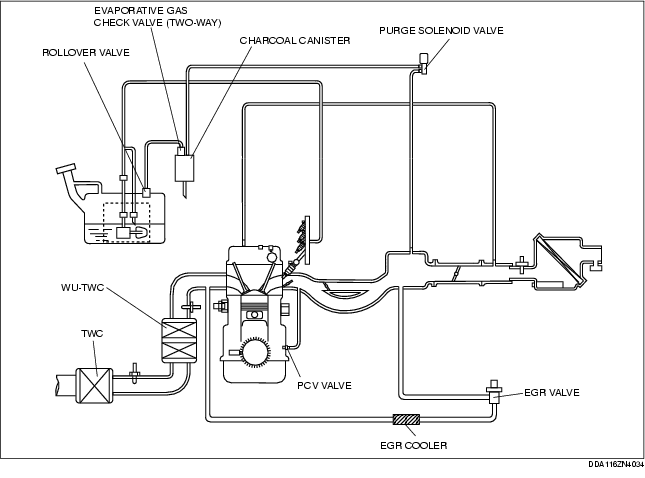

Mazda2
service manual
Search the manual
Home
Workshop Manual
Engine
Emission system
Emission system diagram [ZY]
Emission system diagram [ZY]

Previous
Emission system location index [ZY]
Next
Positive crankcase ventilation (PCV) valve inspection [ZY]
Also listed under:
Technical Guide / Engine / Emission system
.